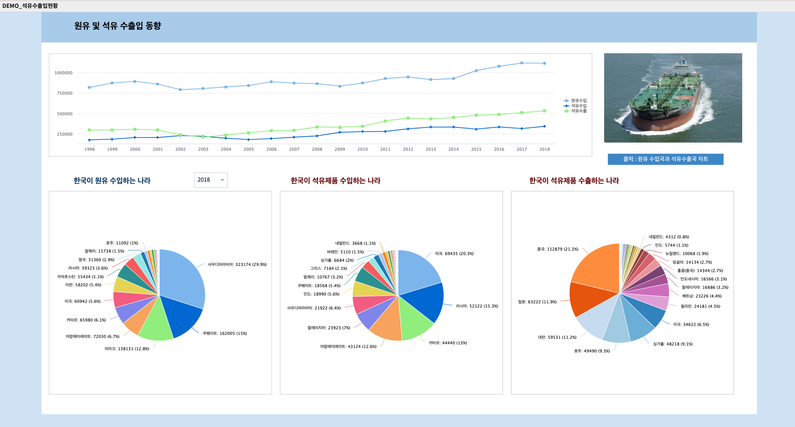
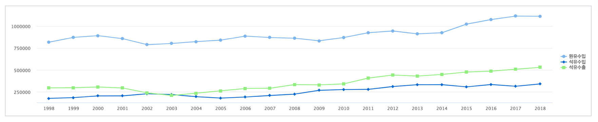
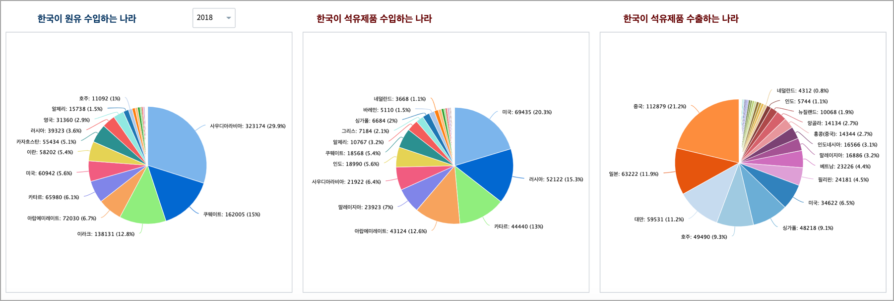
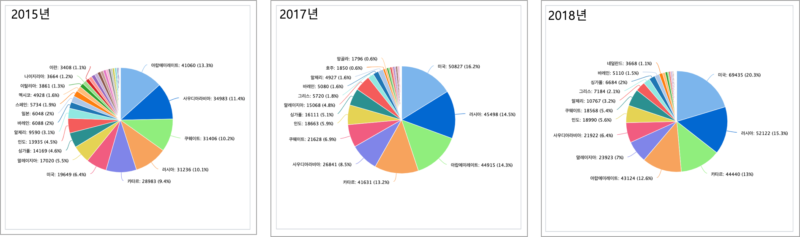
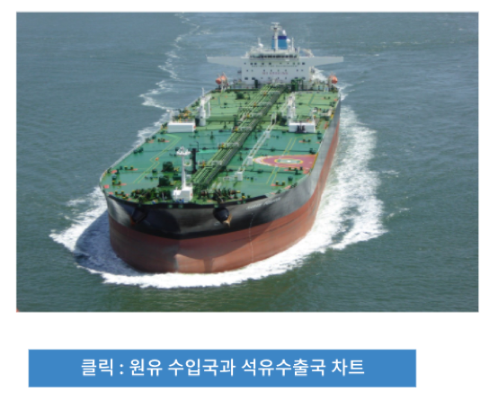
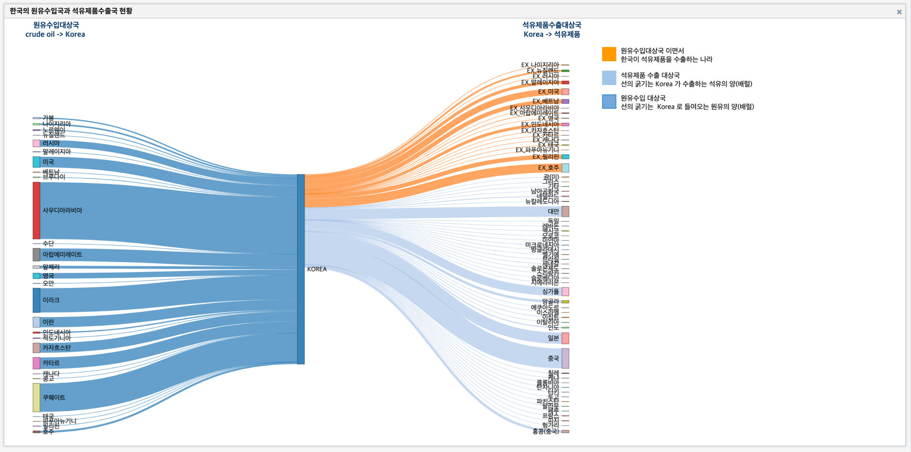

Studio : 원유 및 석유 제품 수출입 현황 (1)¶
원 자료는 국가통계포털(KOSIS) 의 한국석유공사의 석유수출입통계 입니다.
국가별 원유수입(1998 ~ 2018)
석유제품별 수입(1998 ~ 2018)
석유제품별 수출(1998 ~ 2018)
R code 예시
library(reshape2)
library(plyr)
oil_nation <- read.table('oil_nation_1.csv', header=T, sep = "\t", row.names = NULL,
fileEncoding="EUC-KR", encoding="EUC-KR")
oil.melt <- melt(oil_nation, id.vars = c('국가별.1.', '국가별.2.'))
colnames(oil.melt) <- c('Continent', 'Nation', 'YEAR', 'Barrel')
oil.melt$YEAR <- substr(oil.melt$YEAR, 2, 5)
oil.melt$Continent <- as.character(oil.melt$Continent)
oil.melt$Nation <- as.character(oil.melt$Nation)
원본 데이터 (oil_nation)
변환 후 데이터 (oil.melt)
{kind=link}
원유 및 석유제품 수출입 추이(1998년 ~ 2018년)¶
한국의 원유(crude oil) 수입양과 석유 제품 수입양, 석유 제품 수출양의 추이입니다.
1998년 ~ 2018년 원유 수입양(1000 배럴단위) 추이를 보면 약간의 주기성이 보입니다.
2002년 ~ 2003년의 원유 수입이 줄어든 것은 급격하게 경제 성장 중인 중국의 원유 수요로 인한 유가 급상승을 원인으로 추정하고 있으며, 2008년 ~ 2009년에는 2008년 미국의 금융 위기가 영향을 주었던 해입니다.
2013년 ~ 2014년에는 100달러가 넘는 고유가의 영향이 있었던 해이며, 그 이후 공급 확대 기조로 인한 유가의 안정화가 지속되어 원유 수입량이 증가하고, 더불어 국내 정유사를 통한 석유 제품의 수출양도 증가추세 임을 알 수 있습니다.
국가별 원유수입 / 석유제품 수출입 비율 : pie chart¶
pie chart(원형 챠트) 로 조회한 연도별로 국가별 원유수입량, 석유제품 수출입 양의 비율을 그려보았습니다.
특이한 점은 석유제품 수입국 중 미국이 2015년까지만 헤도 4 ~ 5% 비중이었는데, 2016년 부터 12.9%, 16.2%, 20.3% 로 현재는 석유제품 1위의 수입국이 되었습니다.
이는 2014년 부터 미국 셰일가스 개발로 인해 원유 수출 제한이 풀리면서 원유 수출국으로 변화하게 된 요인이 큽니다.
그리고 미국과의 정치,외교적인 관계로 인해 미국에서 생산한 셰일 오일을 미국내에서 정제한 석유 제품의 형태로
한국이 수입양을 늘이면서 2018년에 원유 수입은 줄어들고, 석유 제품 수입이 늘어나게 된 것으로 보입니다.
석유 제품의 수출은 지정학적으로 가까운 중국과 일본, 대만, 싱가폴, 호주 등이 큰 비중을 차지하고 있으며 중국은 급속한 경제 발전으로 인한 수요로 인해 수년동안 계속 1위의 수출 대상국입니다.
원유 수입국과 석유제품 수출국 sankey chart¶
IRIS Studio 의 보고서에는 다른 보고서를 불러올 수 있습니다.
{kind=link}
클릭하면 DEMO_오일_sankeychart_from R 보고서를 “한국의 원유수입국과 석유제품수출국 현황” 이라는 이름으로 팝업창으로 불러오기를 합니다.
이 보고서는 대화형 분석의 RStudio 에서 2018년에 한국이 원유를 수입한 국가들과 한국이 수출하는 석유 제품의 대상 국가들을 원유량, 석유제품량으로 그린 sankey chart입니다.
from, to 와 같은 link 데이터와 node 데이터로 변환하는 과정이 필요하므로 R 에서 변환 및 chart 까지 그린 후 이 chart 를 MINIO 로 저장하여 보고서로 URL업로드 한 것입니다.
